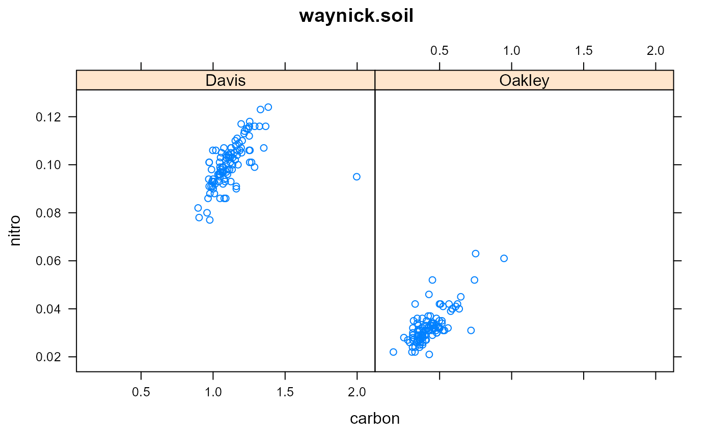
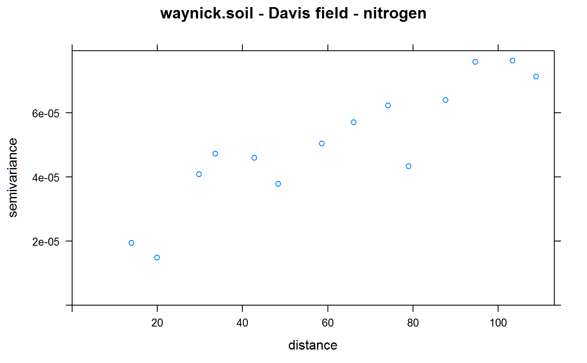

Soil nitrogen and carbon in two fields
waynick.soil.RdSoil nitrogen and carbon in two fields
Format
A data frame with 200 observations on the following 6 variables.
fieldfield name, 2 levels
samplesample number
xx ordinate
yy ordinate
nitronitrogen content, percent
carboncarbon content, percent
Details
Two fields were studied, one at University Farm in Davis, the other near Oakley. The Davis field is silty clay loam, the Oakley field is blow sand.
Source
Waynick, Dean, and Sharp, Leslie. (1918). Variability in soils and its significance to past and future soil investigations, I-II. University of California press. http://archive.org/details/variabilityinsoi45wayn
Examples
library(agridat) data(waynick.soil) dat <- waynick.soil # Strong relationship between N,C libs(lattice) xyplot(nitro~carbon|field, data=dat, main="waynick.soil")# Spatial plot libs(sp, gstat) d1 <- subset(dat, field=="Davis") d2 <- subset(dat, field=="Oakley") coordinates(d1) <- data.frame(x=d1$x, y=d1$y) coordinates(d2) <- data.frame(x=d2$x, y=d2$y) spplot(d1, zcol = "nitro", cuts=8, cex = 1.6, main = "waynick.soil - Davis field - nitrogen", col.regions = bpy.colors(8), key.space = "right")# Variogram v1 <- gstat::variogram(nitro~1, data=d1) plot(v1, main="waynick.soil - Davis field - nitrogen") # Maybe hasn't reached sill